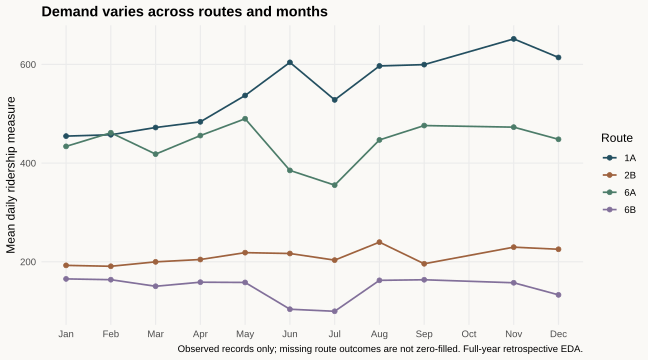

The research question
Can local weather help explain and predict bus ridership, and how does the answer vary by route and season?
Data & methodology
The team studied 22 routes. My analysis focuses on off-campus routes 1A, 2B, 6A and 6B using a supplied table of 327 daily observations, route ridership and 24 weather measures. The daily analysis dataset is included in the repository.
I contributed to data preparation across the project, the analysis of off-campus routes 1A, 2B, 6A and 6B, the conclusion, and report formatting. Each team member determined the methodology for the routes they analyzed.
- Examined weather–ridership patterns by route and season, considering academic timing.
- Began with multiple linear regression and variable selection, then compared decision trees and Random Forest to investigate nonlinear patterns.
- Used the 29-observation Route 1A regression as an exploratory case before extending the comparison to a larger selected period.
- Compared models using R² and RMSE; the Route 4A analysis used a chronological 80/20 train–test split.
What the evidence shows
The 29-observation Route 1A regression had in-sample R² 0.773. The report’s Route 1A model comparison recorded Random Forest R² = 0.7546 (approximately 0.75) and RMSE = 90.03. Wind direction and sea-level pressure led the report’s Random Forest importance ranking.


Implications
The project supported discussion of route-specific service planning using weather and academic timing. It did not measure a deployed scheduling gain or a causal weather effect.
Evaluation boundaries
Results are specific to the selected routes and dates. The analysis is observational and does not establish causal weather effects or measured scheduling gains.
Explore the implementation
The repository contains source code, datasets or retrieval instructions, model results and execution instructions.
View Source Code on GitHub ↗